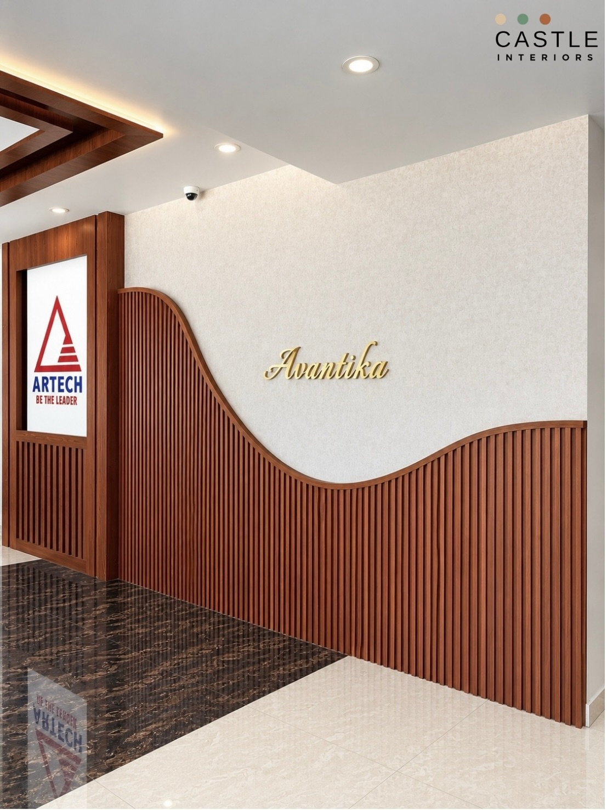
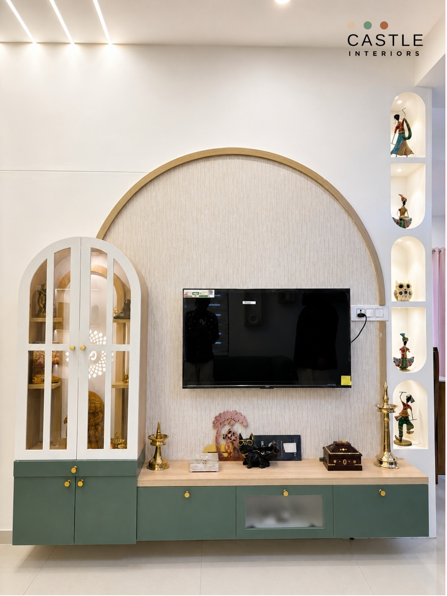
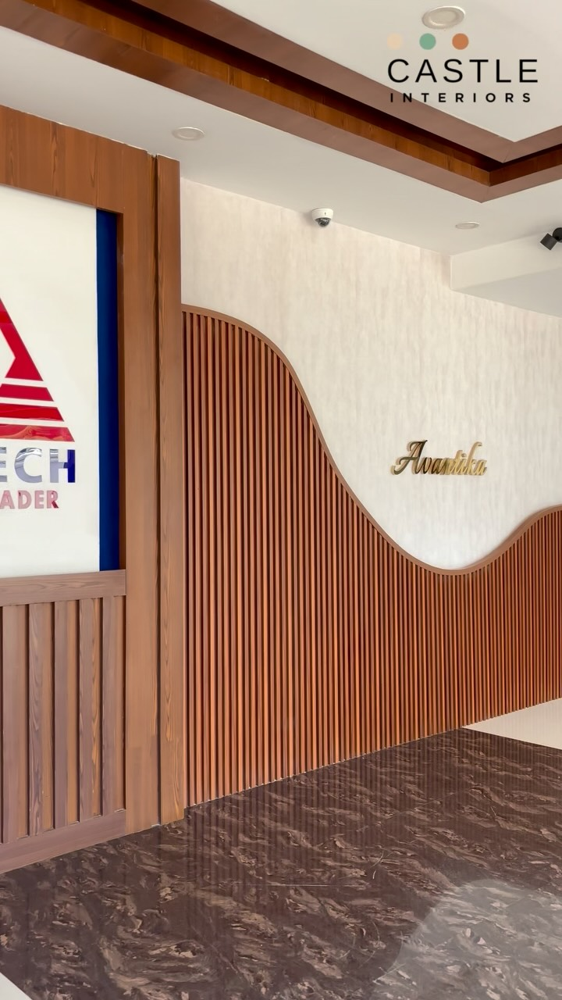

SELECTED WORK
Artech Avantika lobby
 Artech Avantika lobbySELECTED WORK · CASTLE INTERIORS
Artech Avantika lobbySELECTED WORK · CASTLE INTERIORS


An interior design studio in Thiruvananthapuram.
Interior design for homes, apartment lobbies and shops.
Artech Avantika lobbySELECTED WORK · CASTLE INTERIORS
Rajeev Divakar residenceSELECTED WORK · CASTLE INTERIORSCastle Interiors follows each project from first brief to handover.

A conversation about the space, its use and the project.

Layouts, materials and lighting.
From drawings to a finished space.
The finished space.
Interior design for homes, apartment lobbies and shops.


Views from the studio's own project gallery.

Castle Interiors works on residential interiors, commercial interiors and renovation works in Trivandrum.
An interior design studio in Thiruvananthapuram.
Explore the studio ↗
Castle Interiors
Thiruvananthapuram
Thiruvananthapuram
Interior design from first brief to handover.
Castle Interiors works on residential interiors, commercial interiors and renovation works in Trivandrum.
Artech Avantika lobby, Rajeev Divakar residence, Sreekaryam home, Asthra Fashion Hub, TV unit, modular kitchen and wardrobe, Open kitchen, TV unit and prayer unit, marble detailing, TV unit, wash unit and pooja room, TV unit, prayer unit and staircase.
Photographs from the studio’s public project gallery.
Call the studio to discuss your project. No cost or schedule is confirmed in this preview.
No. This is an independent design preview prepared for Castle Interiors.